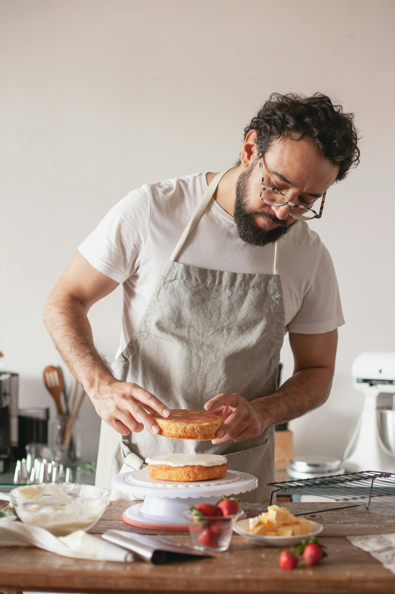
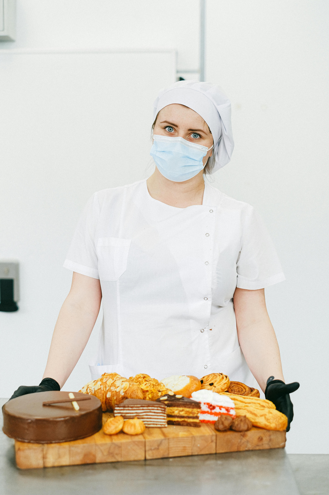

About Sweet Delights
Sweet Delights is a boutique bakery that brings the art of baking to life with its exquisite range of cakes, pastries, and bread. Our bakery is dedicated to using only the finest ingredients, ensuring that every bite is a delightful experience. From classic flavors to innovative creations, Sweet Delights offers something for every palate.
Meet the Team

John Doe
Head Baker with over 20 years of experience in artisanal baking.

Jane Smith
Pastry Chef specializing in French pastries and desserts.
Our Values
At Sweet Delights, we are committed to quality, sustainability, and community. We believe in using the best ingredients, supporting local farmers, and giving back to our community through various initiatives.